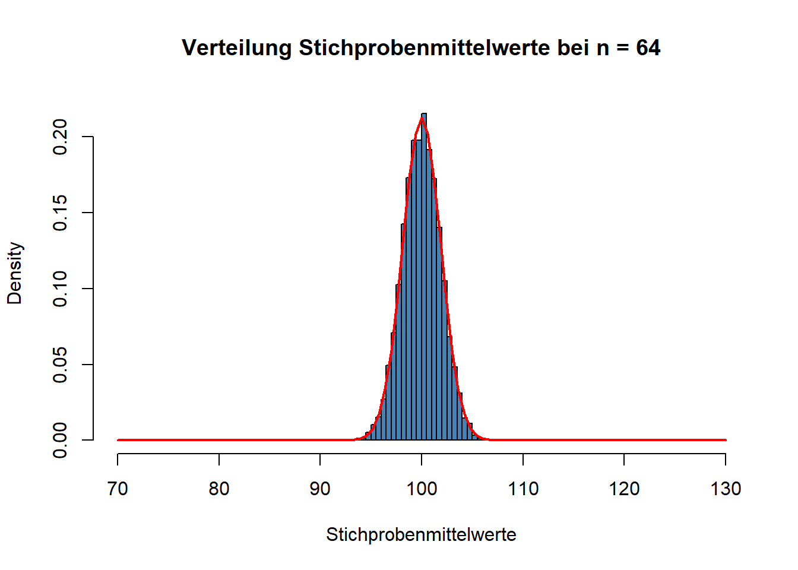
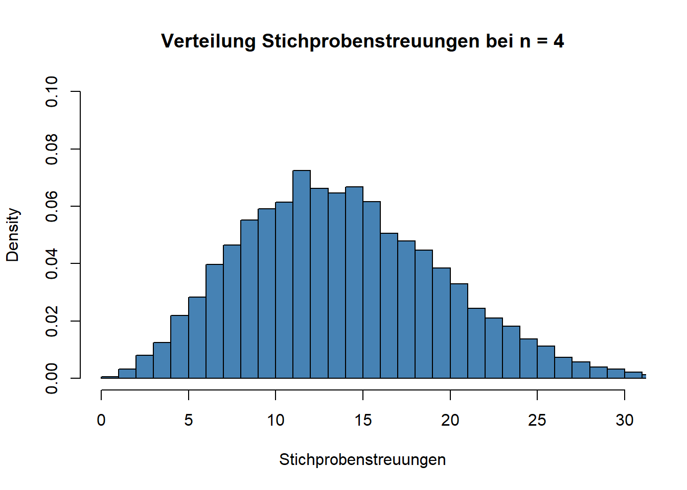
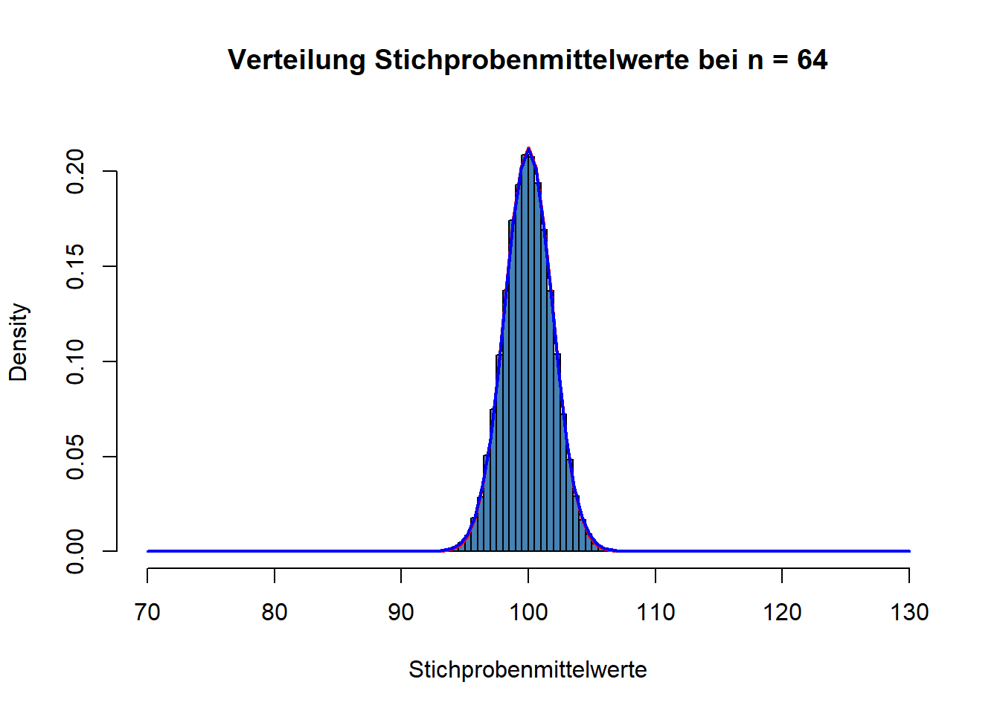
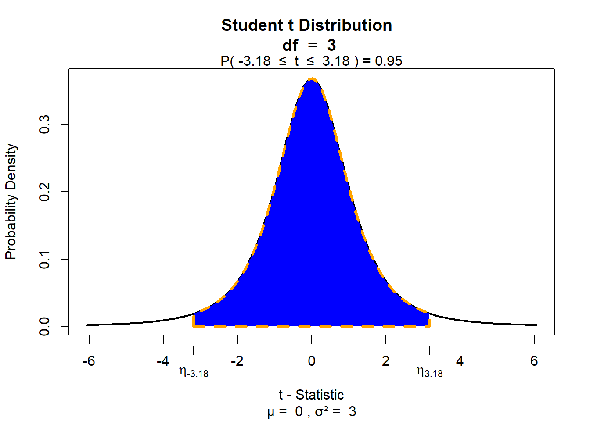

Sitzung 5: Inferenzstatistik – Mittelwerte, Standardfehler und Konfidenzintervall
Mit dem Wissen über Wahrscheinlichkeitsverteilungen, das Sie sich inzwischen angeeignet haben, können wir nun einen weiteren Schritt im Bereich der Inferenzstatistik (auch “schließende Statistik” genannt) machen.
Wenn Ihnen in der Vorlesung schon alles klar geworden ist, dann können Sie die ganzen theoretischen Informationen zu Beginn dieser Seite hier überspringen un über die Navigationsleiste links direkt zum praktischen Excel-Beispiel springen. Wenn Sie noch vertiefender einsteigen wollen, weil es in der Vorlesung vielleicht doch ein wenig schnell ging, lesen Sie sich in Ruhe nach unten durch.
Wie Sie in der Vorlesung mitbekommen haben, geht es in der Inferenzstatistik darum, von Befunden in Stichproben, gezogen aus einer Grundgesamtheit/ Population, auf Merkmale eben dieser Grundgesamtheit/ Population (zurück) zu schließen. Betrachten wir ein konkretes Szenario: PsychologInnen könnten sich bspw. die Frage stellen, ob laute Musik in der Umgebung einen negativen Einfluss auf die kognitive Leistungsfähigkeit hat. Zur Klärung dieser Frage ziehen sie eine zufällige Stichprobe von Menschen aus der Bevölkerung, setzen diese lauter Musik aus, und messen anschließend deren IQ mit Hilfe eines IQ-Tests. Zur Kontrolle gibt es eine weitere Zufallsstichprobe, deren IQ in stiller Umgebung erfasst wird.
Wie Sie schon wissen, ist Intelligenz (gemessen als IQ durch einen IQ-Test) ein in der Population normalverteiltes Merkmal, das den Mittelwert 100 IQ-Punkte und eine Streuung von 15 IQ-Punkten hat. Die IQ-Verteilung der Population sieht also so aus:
Die wichtigsten Merkmale der Normalverteilung kennen Sie schon: Sie wissen z.B., dass ca. 68 Prozent aller Werte im Bereich von plus/ minus einer Standardabweichung liegen. Anders ausgedrückt: ca. 68 Prozent aller Menschen haben einen IQ-Wert zwischen 85 und 115. Das ist unten anhand der blauen Fläche noch einmal dargestellt:
Sie wissen auch schon, dass ca. 95 Prozent aller Werte im Bereich von plus/ minus zwei Standardabweichungen liegen (genauer gesagt im Bereich von plus/ minus 1,96 Standardabweichungen):

95 Prozent aller Menschen haben also einen IQ-Wert, der zwischen 70 (genauer gesagt 70.6) und 130 (genauer gesagt 129.4) liegt. Das heißt auch, dass nur ca. 2,5 Prozent aller Menschen einen IQ-Wert haben, der größer als 130 ist (man spricht dann von Hochbegabung.):

Zurück zum Beispiel:
Wir beginnen unsere Überlegungen mit der oben genannten Kontrollgruppe von Versuchspersonen, deren IQ-Werte in stiller Umgebung erfasst werden. Wir nehmen an, dass Menschen in Stiller Umgebung nicht in ihrer kognitiven Leistungsfähigkeit beeinflusst sind (diese Annahme bezieht sich auf die Population). Entsprechend sollten wir aber auch erwarten, dass damit auch der IQ-Mittelwert der Kontrollgruppe bei 100 IQ-Punkten liegen sollte.
Im Rahmen der (fiktiven) Studie muss natürlich entschieden werden, wie viele Versuchspersonen für jede Versuchsgruppe (= Stichprobengröße) zufällig aus der Population gezogen werden. Wir werden sehen, dass die Stichprobengröße in der Inferenzstatistik eine ganz entscheidende Rolle spielt.
Wir nehmen zunächst an, dass (nur) vier Versuchspersonen pro Bedingung rekrutiert würden. Das nachfolgende Bild soll den Vorgang des zufälligen Ziehens aus der Population für die Kontrollgruppe illustrieren:

Wir ziehen zufällig vier Leute, messen dann den IQ jeder Person und bestimmen dann den IQ-Stichprobenmittelwert. In unserem Fall ergibt sich ein IQ-Stichprobenmittelwert von 88,75. In unserem Fall wissen wir nun schon, dass dieser Mittelwert \(M\) vom Mittelwert (\(\mu\)) der Population abweicht, weil wir ja in unserem fiktiven Beispiel den Populationsmittelwert kennen. In der “echten Welt” kennen wir den Populationsmittelwert natürlich nicht, sonst müsste man ja gar keine Statistik betreiben. Wir würden stattdessen den Stichprobenmittelwert als Schätzwert für den Populationsmittelwert verwenden.
1 Bestimmung der Schätzpräzision
Wie das Beispiel zeigt, ist diese Schätzung auf Basis der Stichprobe natürlich fehlerbehaftet. Wir haben einen Stichprobenmittelwert von 88,75 IQ-Punkten und nicht von 100 IQ-Punkten gemessen. Das Problem ist, dass man praktisch nie sicher wissen kann, wie sehr man mit der Stichprobenschätzung “daneben” liegt. Die gute Nachricht ist aber, dass man abschätzen kann, wie hoch die Messpräzision ist. Das ist das zentrale Element der Inferenzstatistik: Bei unseren auf Stichproben beruhenden Rückschlüssen auf die Population berücksichtigen wir die Unsicherheit der Messung.
Wie kann das gelingen? Stellen Sie sich vor, dass wir den oben beschriebenen Vorgang wiederholen. Wir ziehen also nochmals zufällig vier neue Personen aus der Population, messen ihre IQ-Werte und bestimmen dann wieder den Stichprobenmittelwert. Natürlich ist es sehr wahrscheinlich, dass wir bei diesem zweiten Durchgang andere IQ-Werte erhalten. Unten ist wieder eine Illustration zu sehen.
Dieses Mal messen wir einen Stichprobenmittelwert von 102.5. Würden wir den Vorgang erneut wiederholen, erhielten wir wieder einen etwas anderen Wert. Eine Möglichkeit, die Präzision einer Schätzung (in unserem Fall die Schätzung des Populationsmittelwerts auf Basis des Stichprobenmittelwerts) zu bestimmen, ist, die erwartete Variabilität der Stichprobenkennwerte (in unserem Fall sind das die IQ-Mittelwerte) bei theoretischer Wiederholung des Prozesses zu bestimmen.
Dazu benutzen wir wiederum die Stichprobenkennwertverteilung (Engl. “Sampling Distribution”), also in unserem Fall die zu erwartende Verteilung der Stichprobenmittelwerte. Für diese Stichprobenkennwertverteilung müssen wir dann die Streuung bestimmen. Glücklicherweise kann man die (zu erwartende) Streuung der Stichprobenmittelwerte bestimmen, ohne dass man den Populationsmittelwert kennt.
Stellen Sie sich vor, dass dieses zufällige Ziehen von Stichproben der Größe n = 4 ganz oft wiederholt wird. Bei jedem Durchgang werden die Stichprobenmittelwerte in einer Tabelle aufgelistet.
Nehmen Sie an, dass dieser Vorgang zehntausendmal wiederholt wird. Am Ende hätte man also eine Tabelle von zehntausend Stichprobenmittelwerten. Als nächstes stellen wir uns vor, dass wir die Verteilung dieser Stichprobenmittelwerte mit Hilfe eines Histogramms visualisieren. Das würde dann so aussehen, wie in der nachfolgenden Abbildung:
Wie Sie sehen können, sieht auch diese Verteilung der Stichprobenmittelwerte (wichtig: Das ist ein Histogramm über die Stichprobenmittelwerte, nicht die individuellen IQ-Werte) aus wie eine Normalverteilung. Die rote Kurve zeigt, dass die Stichprobenmittelwerte tatäschlich einer Normalverteilung entsprechen. Wir sehen auch: Wenn der Mittelwert der Populationswerte bei 100 liegt, dann wird auch der Mittelwert der Stichprobenmittelwerte bei 100 liegen. Es gilt also: Der Mittelwert der Stichprobenmittelwertsverteilung entspricht dem Populationsmittelwert des Merkmals (in unserem Fall IQ).
Wir können nun die Streuung dieser auf einer Simulation mit zehntausend Stichprobenmittelwerten basierenden Stichprobenmittelwertsverteilung bestimmen. Die Streuung ist:
sd(Stichprobenmittelwerte)## [1] 7.491133
Tatsächlich kann man mathematisch beweisen, dass die Streuung der Stichprobenmittelwerte folgender Gleichung entspricht:
\(SE~= \sqrt{\frac{\sigma^2}{n}} = \frac{\sigma}{\sqrt{n}}\).
Die Streuung von Stichprobenmittelwerten entspricht der Populationsstreuung (\(\sigma\)) geteilt durch die Wurzel der Stichprobengröße. In unserem Fall wissen wir, dass die Populationsstreuung 15 IQ-Punkte beträgt und wir eine Stichprobengröße von n = 4 haben. Nutzen wir diese Werte und setzen sie in die Gleichung ein, so erhalten wir:
\(SE~= \frac{\sigma}{\sqrt{n}}~= \frac{15}{\sqrt{4}}~= 7.5\).
Also: bei Stichproben der Größe n = 4 und einem normalverteilten Merkmal mit einer Streuung von 15 Einheiten (IQ-Werte in unserem Fall) beträgt die Streuung der Stichprobenmittelwerte 7.5 Einheiten (IQ-Werte in unserem Fall). Übrigens: Die Streuung von Stichprobenmittelwerten nennt man Standardfehler (englisch “Standard Error”, abgekürzt \(SE\)).
Die Streuung von Stichprobenmittelwerten nennt man Standardfehler (“Standard Error”, \(SE\)) oder Standardschätzfehler. Der Standardfehler ist ein Maß dafür, wie sehr Stichprobenmittelwerte variieren würden, wenn man das zufällige Ziehen aus der Population unendlich oft wiederholen würde. Praktisch gibt das Maß an, wie präzise man einen Stichprobenmittelwert gemessen hat. Die Formel für \(SE\) ist:
\(SE~= \sqrt{\frac{\sigma^2}{n}} = \frac{\sigma}{\sqrt{n}}\).
Was nutzt uns dieses Wissen nun? Durch die Bestimmung des \(SE\) haben wir ein Maß, dass uns sagt, wie präzise wir mit unserem Stichprobenmittelwert bei einer Stichprobe der Größe \(n\) den Populationsparameter schätzen. Bezogen auf unser Beispiel: Wir können nun sagen, dass wir bei \(n = 4\) mit einer durchschnittlichen Abweichung vom IQ-Mittelwert der Population von 7.5 IQ-Punkten rechnen müssen. Ein gemessener Stichprobenmittelwert von 102,5 IQ-Punkten wäre bei \(n = 4\) also kein sehr außergewöhnliches Ergebnis, wenn der wahre Wert tatsächlich 100 IQ-Punkte beträgt.
2 Erhöhung der Schätzpräzision durch größere Stichproben
An der Formel für \(SE\) sehen Sie schon, warum die Stichprobengröße in der Inferenzstatistik ein ganz entscheidender Faktor ist. Was würde nämlich mit \(SE\) passieren, wenn \(n\) größer wird? Richtig, \(SE\) würde kleiner werden und die Messpräzision somit ansteigen. Unten sehen Sie die Verteilung der Mittelwerte für \(n = 16\).

Der Standardfehler beträgt in diesem Fall:
sd(Stichprobenmittelwerte)## [1] 3.749655Bei einer Verfierfachung der Stichprobengröße halbiert sich also der Standardfehler. Wiederholen wir das noch einmal, diesmal mit \(n = 64\).

Nun beträgt \(SE\):
sd(Stichprobenmittelwerte)## [1] 1.875423Also: Je größer \(n\) ist, umso weniger werden die Stichprobenmittelwerte streuen und umso eher kann man folglich erwarten, dass ein einzelner Stichprobenmittelwert \(M\) tatsächlich nah am Populationsmittelwert \(\mu\) liegen wird.
3 Angabe der Präzision durch ein Intervall
3.1 SE Intervall
Für die Schätzung eines Populationsmittelwerts basierend auf einem Stichprobenmittelwert kann man also den Standardfehler als Schätzfehler ansehen. Nehmen wir wieder die Ausgangssituation an, in der wir \(n = 4\) Leute der Kontrollgruppe zugeteilt hatten, die den IQ-Test in stiller Umgebung bearbeitet. Nehmen wir an, wir hätten einen IQ-Mittelwert von 102,5 IQ-Punkten in dieser Gruppe gemessen. Wir wissen, dass der \(SE\) bei einer Stichprobengröße von vier Versuchspersonen 7,5 IQ-Punkte beträgt. Wir können also sagen: Unsere Schätzung für den Populationsmittelwert beträgt 102,5 IQ-Punkte. Dies ist zunächst eine so genannte Punktschätzung. Wir können jetzt zusätzlich noch den IQ-Bereich angegeben, der einem Intervall von +/- \(SE\) entspricht: \(M - SE~= 102,5 - 7,5 = 95\) und \(M + SE = 102,5 + 7,5 = 110\). Also: plausible Schätzwerte im Bereich von +/- \(SE\) für den Populationsmittelwert liegen zwischen 95 und 110 IQ-Punkten.
Wie Sie schon wissen, ist die Verteilung der Stichprobenmittelwerte eine Normalverteilung, wenn das Merkmal (in unserem Fall IQ-Werte) in der Population normalverteilt ist. Sie wissen auch, dass es bei einer Normalverteilung so ist, dass ca. 68% der Werte im Bereich von +/- einer Standardabweichung liegen. Sie wissen auch, dass man die Standardabweichung der Stichprobenmittelwerte Standardfehler (\(SE\)) nennt. Damit wissen Sie nun auch, dass 68% aller Stichprobenmittelwerte im Bereich von +/- \(1\cdot SE\) liegen. Man kann deshalb sagen, dass die Wahrscheinlichkeit, dass das Intervall von +/- \(1\cdot SE\) um den Stichprobenmittelwert herum, den wahren Wert der Population mit einer Wahrscheinlichkeit von 68% beinhaltet bzw. einschließt. Wir könnten hier also auch von einem 68% Konfidenzintervall sprechen.
Übrigens, die Zahl mit der man \(SE\) multipliziert um ein Intervall zu konstruieren, dass den wahren (Populations-) Wert mit einer bestimmten Wahrscheinlichkeit einschließt, nennt man auch z-Wert. Z-Werte sind also nichts anderes als Standardfehlereinheiten.
3.2 95% Konfidenzintervall
Typischerweise gibt man als Intervall nicht ein 68% Konfidenzintervall an, sondern das 95% Konfidenzintervall. Sie wissen schon, mit welchem Wert man die Standardabweichung einer Normalverteilung multiplizieren muss, um ein Intervall zu konstruieren, innerhalb dessen 95% aller Werte liegen. Der Wert ist \(1.96\). Um für unsere Schätzung also ein 95 % Konfidenzintervall (abgekürzt 95% KI oder englisch 95% CI) zu erhalten, müssen wir also Folgendes rechnen:
\(KI_{Untergrenze} = M - 1,96\cdot SE~= 102,5 - 1,96 \cdot 7,5~= 87,8\) IQ-Punkte; und \(KI_{Obergrenze} = M + 1,96\cdot SE~= 102,5 - 1,96 \cdot 7,5~= 117,2\) IQ-Punkte.
Im Bereich von +/- \(1.96\) Standardabweichungen einer Normalverteilung liegen 95% aller Werte. Ein Konfidenzintervall um einen Stichprobenmittelwert \(M\) herum, welches den Populationsmittelwert \(\mu\) mit einer Wahrscheinlichkeit von 95% enthält, erhält man also, in dem man vom Stichprobenmittelwert zunächst 1,96-mal \(SE\) abzieht, und danach 1,96-mal \(SE\) addiert:
- \(KI_{Untergrenze} = M - 1,96\cdot SE\)
- \(KI_{Obergrenze} = M + 1,96\cdot SE\)
Zur Selbstkontrolle:
Wie wäre das 95% Konfidenzintervall, wenn der erhobene Stichprobenmittelwert von 102,5 IQ-Punkten nicht auf Basis von vier sondern 16 Versuchspersonen ermittelt worden wäre?
4 Standardisierung
Bisher haben wir in unseren Überlegungen immer die “Messeinheiten” des konkreten Beispiels benutzt. Unser Szenario bezieht sich auf IQ-Werte und wir haben deshalb bisher alles in IQ-Werten ausgedrückt. Weiter oben haben wir schon den Begriff “z-Werte” eingeführt und festgestellt, dass es sich dabei einfach um Standardfehlereinheiten handelt. Statt in IQ-Werten könnten wir unsere beispielhaften Befunde natürlich auch einfach in z-Werten ausdrücken. Wir behandeln das hier, da standardisierte Werte in der Statistik häufig benutzt werden.
Betrachten wir wieder das Ergebnis unserer Kontrollgruppe. Dort hatten wir einen IQ-Mittelwert von 102,5 gemessen. Wenn es stimmt, dass die IQ-Werte in der Population normalverteilt sind mit \(\mu~100\), dann können wir annehmen, dass dieser Stichprobenmittelwert von 102,5 IQ-Punkten aus einer Stichprobenmittelwertsverteilung stammt, die ebenfalls einen Mittelwert von 100 hat. Der Abstand zwischen Stichprobenmittelwert und Mittelwert der Stichprobenmittelwertsverteilung beträgt \(102,5 - 100~= 2,5\) IQ-Punkte. Diesen Abstand könnten natürlich auch in \(SE\)-Einheiten (sprich z-Werten) statt IQ-Einheiten angeben. Wir wissen, dass bei \(n~=4\) der \(SE\) 7,5 IQ-Punkte beträgt. Ein Abstand von 2,5 IQ-Punkten entspricht also \(\frac{2,5}{7,5}~= 0.33\) \(SE\), oder \(0.33\) \(z\).
Die allgemeine Formel zur Umrechnung von Werten in ihrer ursprünglichen Einheit in standardisierte z-Werte ist:
\(\frac{X - \mu}{\sigma}\).
In unserem Fall ist \(X\) der gemessene Stichprobenmittelwert, \(\mu\) der (vermutete) Mittelwert der Stichprobenmittelwertsverteilung und \(\sigma\) der Standardfehler (\(SE\)).
Noch einmal: würden wir die Stichprobenmittelwertsverteilung für \(n~= 4\) nicht wie weiter oben in IQ-Einheiten sondern in z-Einheiten ausdrücken, dann sähe diese so aus:

Die blaue senkrechte Linie, die die x-Achse bei \(0,33\) schneidet, markiert unsere Stichprobe mit IQ-Mittelwert von 102,5.
4.1 Warum Standardisierung?
Sie fragen sich jetzt vielleicht, wozu diese Standardisierung von Werten überhaupt gut sein soll. Was bringt uns das? Stellen Sie sich dazu vor, Sie würden den Befund der Kontrollgruppe jemandem mitteilen, der von IQ-Werten nichts weiß, außer dass dieses Merkmal in der Population normalverteilt ist. Die Person kennst sich außerdem mit den Eigenschaften der Normalverteilung aus. (Es könnte sich hier also z.B. um eine/n Forscher/in handeln, die sich mit Statistik aber nicht mit IQ-Werten auskennt.) Wenn Sie dieser Person sagen, dass Sie in einer Untersuchung einen IQ-Mittelwert von 102,5 Punkten gemessen haben, dann wird diese Person keine Ahnung haben, was das bedeutet. Ist das ein ungewöhnliches/ sehr unwahrscheinliches Ergebnis? Wenn Sie der Person stattdessen sagen, dass sie einen Stichprobenmittelwert gemessen haben, der 0,33 z beträgt, so wird die Person sofort erkennen, dass Ihr Messergebnis (also dieser gefundene Stichprobenmittelwert) alles andere als ein verblüffendes Ergebnis ist. Denn: z-Werte nah an 0 sind am wahrscheinlichsten und ein z-Wert von 0,33 ist sehr nah dran. Hätte die Untersuchung einen Stichprobenmittelwert von 115 IQ-Punkten ergeben, so entspräche das einem z-Wert von \(\frac{115 - 100}{7,5}~= 2\). Die Person wüsste in diesem Fall sofort, dass es sich hierbei um ein sehr ungewöhnliches/ unwahrscheinliches Ergebnis handeln würde; denn Werte die 2 Standardabweichungen (2 z) oder mehr über dem Mittelwert liegen, haben eine sehr geringe Wahrscheinlichkeit von nur ca. 2%.
5 Populationsstreuung unbekannt: von der Normalverteilung zur t-Verteilung
Wir haben uns vor Augen geführt, wie man im Rahmen der Inferenzstatistik die Schätzpräzision einer Stichproben-Messung mit Hilfe von Wissen über die Stichproben-Verteilung des Schätzwertes ermitteln kann (in unserem Fall ist der Stichprobenmittelwerts \(M\) der Schätzwert für den Populationsparameter \(\mu\)). Sie haben bereits gelernt, dass sich die Schätzpräzision gut durch ein Intervall angeben lässt. In der Regel gibt man das 95%-Konfidenzintervall an.
In unserem bisherigen Beispiel ging es um IQ-Mittelwerte. Das war kein Zufall. IQ-Mittelwerte eignen sich als Einstiegsbeispiel, weil bei IQ-Werten die Streuung der Werte in der Population bekannt ist (15 IQ-Punkte). Das haben wir uns oben in der Formel für den Standardfehler (\(SE\)) zunutze gemacht. Dort hatten wir nämlich die (bekannte) Populationsstreuung durch die Wurzel aus der Stichprobengröße geteilt, um \(SE\) zu ermitteln.
Das war allerdings eine Vereinfachung. In den allermeisten Fällen wird man die Streuung des Merkmals in der Population nämlich gar nicht kennen (genauso wenig wie den Populationsmittelwert). Denken Sie z.B. an das Trolley-Problem aus der zweiten Sitzung zurück. In der “Switch-Bedingung” des Experiments sollten Versuchspersonen angeben, wie “moralisch akzeptabel” es ist, einen Zug umzulenken, dadurch eine Person zu töten aber fünf Personen zu retten. Natürlich will man auch im Rahmen dieser Studie anhand des Mittelwerts der “Moral-Antworten” der Versuchspersonen (der Stichprobe) etwas über die “allgemeine” Sicht von Menschen in Bezug auf derartige moralische Dilemmata lernen. Wie Menschen (also die Population) solche Situationen im Mittel (das ist \(\mu\)) moralisch bewerten wissen wir nicht, deshalb machen wir ja das Experiment. Wir wissen aber genauso wenig, wie sehr sich Menschen in ihren Einschätzungen unterscheiden (das ist die Populationsstreuung \(\sigma\)). In der Regel kennt man also weder \(\mu\) noch \(\sigma\).
Welches Problem ergibt sich daraus? Offensichtlich können wir zur Bestimmung von \(SE\) in diesem Fall \(\sigma\) nicht in die Gleichung einsetzen. Was können wir stattdessen tun, um die Streuung von Stichprobenmittelwerten zu ermitteln? Die Antwort: Statt \(\sigma\) setzen wir in die Formel die Streuung der Stichprobe \(s\) ein. Denn: Genau wie der Stichprobenmittelwert \(M\) der Schätzwert für den Populationsparameter \(\mu\) ist, so ist die Stichprobenstreuung \(s\) ein Schätzwert für die Populationsstreuung \(\sigma\). Hier ergibt sich aber ein Problem. Wir haben oben gesehen, dass man erwarten muss, dass sich Stichprobenmittelwerte bei wiederholtem Ziehen aus der Population voneinander unterscheiden. Unser Maß dafür war \(SE\), die Streuung der Stichprobenmittelwerte. Um \(SE\) zu bestimmen, wenn wir \(\sigma\) nicht kennen, benutzen wir stattdessen \(s\) als Schätzwert für \(\sigma\). Aber auch \(s\) wird ja \(\sigma\) nicht “perfekt” schätzen. Auch \(s\) wird bei wiederholter Stichprobenziehung immer etwas anders ausfallen. Unten sehen Sie ein Histogramm, dass die Verteilung von \(s\) (der Stichprobenstreuung) bei zehntausend Stichprobenziehungen mit \(n~= 4\) aus einer Normalverteilung (wir nehmen dazu wieder unsere IQ-Verteilung) zeigt.

Der Mittelwert dieser Verteilung (also der Mittelwert der Stichprobenstreuungen) entspricht der Populationsstreuung. Aber wie Sie sehen können “schwanken” auch die Stichprobenstreuungen um diesen wahren Wert (der ja in der Population 15 IQ-Punkte beträgt). Die Streuung der Stichprobenstreuungen ist in diesem Fall:
sd(Stichprobenstreuungen)## [1] 5.85299Wenn Sie näher wissen wollen, durch welche Funktion sich die Verteilung von Stichprobenstreuungen beschreiben lässt, dann schauen Sie hier.
Natürlich würden wir auch hier die Schätzpräzision der Populationsstreuung erhöhen, wenn wir eine größere Stichprobe hätten. Hier die Verteilung für \(n = 64\).

5.1 Bedeutung für die Bestimmung von \(SE\)
Würden wir also bei der Bestimmung von \(SE\) (also der Streuung der Stichprobenmittelwerte) im Fall von unbekanntem \(\sigma\) einfach die Stichprobenstreuung \(s\) als Schätzwert für \(\sigma\) einsetzen, dann würden wir nicht berücksichtigen, dass auch die \(s\) als Schätzwert für \(\sigma\) mit Unsicherheit behaftet ist. Wir würden folglich \(SE\)-Werte und \(KI\)-Werte bestimmen, die diese Unsicherheit über den wahren Wert von \(\sigma\) nicht beinhalten. Anhand der beiden Stichprobenverteilungen für \(s\) sehen Sie auch, dass dieses Problem umso größer ist, je kleiner die Stichprobe (\(n\)) ist. Bei großen Stichproben wird \(s\) ja schließlich sehr nah an \(\sigma\) liegen.
Nun sind wir gewissermaßen in einem Dilemma. Wir kennen \(\sigma\) nicht und wissen, dass \(s\) ein fehlerbehafteter Schätzwert für \(\sigma\) ist. Etwas anderes/ besseres als \(s\) können wir aber zur Bestimmung von \(SE\) auch nicht nehmen. Wie können wir also zum Ausdruck bringen, dass die Bestimmung von \(SE\) (und natürlich jedem anderen Konfidenzintervall) unsicherer ist, je unsicherer wir \(\sigma\) anhand von \(s\) schätzen - also je kleiner die Stichprobengröße \(n\) ist.
5.2 Noch höhere Werte für SE bei kleinen Stichproben: die t-Verteilung
Die Idee ist, dass man systematisch größere Werte für \(SE\) bestimmt, je kleiner \(n\) ist. Größere Werte für \(SE\) drücken schließlich eine größere Unsicherheit der Schätzung des Populationsparameters durch die Stichprobe aus. Zu Beginn hatten wir bereits gesehen, dass \(SE\) auch bei bekanntem \(\sigma\) größer wird, je kleiner \(n\) ist. Diese Tendenz soll jetzt aber noch “extremer” sein, um eben bei unbekanntem \(\sigma\) zusätzlich die Unsicherheit zu berücksichtigen, die dadurch entsteht, dass \(\sigma\) durch ein fehlerbehaftetes \(s\) ersetzt worden ist.
Das Ergebnis dieser systematischen Integration von Unsicher über \(\sigma\) bei der Bestimmung von \(SE\) ist eine theoretische Verteilung, die man t-Verteilung (oder auch “Studentische t-Verteilung”) nennt. (Übrigens: Wenn Sie wissen wollen, warum die t-Verteilung auch “Studentische t-Verteilung” genannt wird und was diese Verteilung eigentlich mit irischem Bier zu tun hat, dann schauen Sie hier.)
Wie diese Verteilung bei einer Stichprobengröße von \(n = 4\) aussieht, sehen Sie unten:
Die blaue Kurve zeigt die t-Verteilung bei \(n = 4\). Die rote Kurve zeigt zum Vergleich wieder die Normalverteilung für \(SE~= 7,5\). Wie Sie sehen können, ist die t-Verteilung in der Mitte schmaler aber an den Rändern breiter als die Normalverteilung. Das führt dazu, dass auch die Streuung der t-Verteilung (für kleine \(n\)) größer ist als die der Normalverteilung. Für die oben dargestellte t-Verteilung ist die Streuung:
sd(Stichprobenmittelwerte, na.rm=TRUE)## [1] 8.817848Oben hatten wir erwähnt, dass die Unsicherheit durch die Verwendung von \(s\) als Schätzer für \(\sigma\) abnehmen sollte, je größer \(n\) wird. Die t-Verteilung hat tatsächlich die Eigenschaft, diese abnehmende Unsicherheit bezüglich \(\sigma\) abzubilden. Hier die t-Verteilung bei \(n~= 8\).

Und hier noch einmal für \(n~= 64\).

Wie Sie sehen können, geht die t-Verteilung bei steigendem \(n\) immer mehr in eine Normalverteilung über. In der Abbildung oben ist die blaue Kurve der t-Verteilung von der roten Kurve der Normalverteilung schon gar nicht mehr zu unterscheiden.
In der nachfolgenden Abbildung sehen Sie eine Zusammenfassung, die zeigt, wie die t-Verteilung mit steigendem \(n\) in die Normalverteilung übergeht. Anders als die Abbildungen oben sind die Werte in der unteren Abbildung wieder standardisiert (sodass der Mittelwert der Verteilungen bei 0 liegt). Die schwarze gestrichelte Linie entspricht einer Normalverteilung.

Eine Anmerkung: die t-Verteilung ist tatsächlich eine “rein theoretische” Verteilung, die praktisch sinnvoll ist, wenn man die Populationsstreuung nicht kennt und die damit einhergehende Unsicherheit in die inferenzstatistischen Schlüsse einbeziehen will. Die t-Verteilung hat aber - anders als die Stichprobenmittelwertsverteilung - keine “empirische Realität”. Stellen Sie sich eine sehr reiche Firma mit sehr viel Zeit vor, die den Auftrag erhält, aus einer Population mit Merkmal \(X\) tatsächlich fortlaufend Stichproben zu ziehen (etwas das eigentlich niemand jemals so machen würde), die Stichprobenmittelwerte zu bestimmen und letztlich deren Verteilung abzutragen. Egal um welches Merkmal es sich bei \(X\) handelt, egal wie klein oder groß die Stichproben sind, die unsere fiktive Firma ständig aus der Population zieht, die Verteilung der Stichprobenkennwerte wird niemals aussehen wie eine t-Verteilung. Bei kleinem \(n\) wird die Stichprobenkennwertverteilung qualitativ so aussehen, wie die Verteilung von \(X\) in der Population und je größer \(n\) wird, umso mehr wird die Stichprobenkennwertverteilung wie eine Normalverteilung aussehen. Diesen Umstand nennt man zentralen Grenzwertsatz. Die Verteilung wird aber nie so aussehen, wie eine t-Verteilung. Die t-Verteilung ist somit “rein theoretisch”.
5.3 Zentraler Grenzwertsatz
Den Umstand, dass die Verteilung der Stichprobenmittelwerte für ein Merkmal \(X\) mit zunehmender Stichprobengröße \(n\) in die Normalverteilung übergeht, egal wie \(X\) in der Population verteilt ist, nennt man zentralen Grenzwertsatz.
Mehr Hintergrundinformationen zum zentralen Grenzwertsatz gibt es hier.
Eine Website, auf der sich der zentrale Grenzwertsatz mit Hilfe einer Simulation nachvollziehen lässt, finden sie hier. (Sie müssen auf dieser Website dann auf den Button “Begin” drücken.) Die nachfolgenden Abbildungen wurden mit dem Simulator von jener Website erzeugt.
Unten im Bild sehen Sie den Fall, in dem das Merkmal \(X\) in der Population normalverteilt ist (das oberste Histogramm zeigt die Populationsverteilung von \(X\)). Das blaue Histogramm zeigt die Verteilung des Mittelwerts von \(X\), basierend auf 10,000 Ziehungen von Stichproben der Größe \(n~= 2\). Sie sehen: Wenn \(X\) normalverteilt ist, dann ist auch der Mittelwert normalverteilt, egal wie klein \(n\) ist.
In den nachfolgenden zwei Abbildungen ist \(X\) in der Population nicht normalverteilt (sondern auf sehr seltsame Weise). Auf der linken Seite sehen Sie, wie der Mittelwert von \(X\) in diesem Fall verteilt ist, wenn die Stichproben klein sind (\(n~= 2\)). In diesem Fall sieht auch die Mittelwertsverteilung sehr seltsam (und alles andere als normal) aus. Auf der rechten Seite ist die Mittelwertsverteilung für \(n~=25\) dargestellt. Wie Sie sehen, sieht diese Verteilung nahezu aus wie eine Normalverteilung. Also: Egal wie \(X\) in der Population verteilt ist, der Mittelwert von \(X\) wird mehr und mehr normalverteilt sein, je größer \(n\) ist.
5.4 Bestimmung von Konfidenzintervallen mit der t-Verteilung
Was ändert sich für die Bestimmung eines Konfidenzintervalls, wenn anstelle der Normalverteilung mit der t-Verteilung gearbeitet wird? Ihnen sollte klar sein, dass auf Basis der t-Verteilung ermittelte Konfidenzintervalle tendenziell “breiter” sind als auf Basis der Normalverteilung konstruierte. Der Breitenunterschied sollte immer kleiner werden, je größer \(n\) ist, denn: je größer \(n\) ist, umso schmaler wird die t-Verteilung an den Rändern und umso mehr geht sie in die Normalverteilung über. Heißt z.B.: bei kleiner Stichprobe (kleinem \(n\)) wird ein t-verteilungsbasiertes 95% KI größer sein als ein normalverteilungsbasiertes 95% KI.
Betrachten wir wieder den Fall \(n~= 4\). Die standardisierte t-Verteilung für diesen Fall sehen Sie in der Abbildung “Vergleich von t-Verteilungen für verschiedene n” oben. Bei der Normalverteilung wissen wir, dass die mittleren 95% aller Werte im Bereich von +/- 1,96 Standardabweichungen liegen. Die t-Verteilung für \(n~=4\) ist aber an den Rändern etwas breiter. Es gilt für die t-Verteilung deshalb nicht, dass 95% aller Werte in den Bereich von +/- 1,96 Standardabweichungen fallen. Für die Ermittlung des 95% KI basierend auf der t-Verteilung müssen wir also einen anderen Wert verwenden. Anders ausgedrückt: Wir brauchen das mittlere Integral unter der Kurve der t-Verteilung bei \(n~=4\), welches 95% aller Werte umfasst. Dann müssen wir schauen, welchen x-Werte die Endpunkte dieses Integrals bei der standardisierten t-Verteilung entsprechen. Glücklicherweise müssen wir das nicht mehr selbst berechnen, das haben schon Menschen vor uns für uns erledigt. Wir müssen die entsprechenden Werte einfach nur nachschlagen.
für die t-Verteilung bei \(n~=4\) liegen die mittleren 95% aller Werte im Bereich von +/- 3,18 Standardabweichungen. Unten sehen Sie dazu eine Illustration.

Hätten wir statt \(n~= 4\) eine Stichprobe der Größe \(n~= 64\), dann würden die mittleren 95% aller Werte im Bereich von +/- 1,998 Standardabweichungen. Dieser Wert läge also schon sehr nah an dem der Normalverteilung (1,96).
Wie konstruiert man nun das Konfidenzintervall für die Parameterschätzung? Kehren wir zu unserem IQ-Beispiel zurück. Nehmen wir an, wir wüssten nichts über den Populationsmittelwert und auch nichts über die Populationsstreuung (obwohl wir das eigentlich tun). Nehmen wir weiterhin wieder an, dass unsere Zufallsstichprobe aus \(n~=4\) Versuchspersonen besteht und wir einen Stichprobenmittelwert von 102,5 IQ-Punkten berechnet haben. Da wir die Populationsstreuung nicht kennen, wollen wir das 95% Konfidenzintervall diesmal auf Basis der t-Verteilung für \(n~= 4\) anstatt der Normalverteilung bestimmen.
Wir haben oben bereits gesehen, dass die so genannten “kritischen Werte” der t-Verteilung für \(n~= 4\), die einen mittleren Flächenanteil von 95% eingrenzen +/- 3,18 sind. Das heißt +/- 3,18 mal die Standardabweichung der t-Verteilung für \(n~ 4\) umschließt 95% der Fläche. Diese Werte entstammen aber der standardisierten t-Verteilung. In unserem Fall müssen wir bedenken, dass wir IQ-Werte gemessen hatten. Welchen Wert hat die Standardabweichung der Stichprobenmittelwerte in diesem Fall? Diesen müssen wir zunächst noch berechnen. Da wir ja diesmal davon ausgehen, die Populationsstreuung nicht zu kennen, müssen wir \(SE\) also auf Basis der Stichprobenstreuung bestimmen. In unserem Beispiel hatten wir einen Stichprobenmittelwert von 102,5 IQ-Punkten, welcher durch die vier IQ-Werte 95, 110, 100 und 105 zustande kam. Nehmen wir diese Werte, um die Streuung der Population zu schätzen, so erhalten wir einen Wert für \(s\) von:
sd(c(95,110,100,105))## [1] 6.454972Sie sehen schon, dass wir mit unserer Stichprobe in diesem Fall eine deutlich zu kleine Populationsstreuung schätzen. Aber vergessen Sie nicht, dass man das eigentlich gar nicht weiß, da die Populationsstreuung ja eigentlich unbekannt ist.
Diesen Wert benutzen wir nun zur Ermittlung von \(SE\), und zwar genau so, wie wir es zuvor gemacht hatten. Wir setzen statt \(\sigma\) diesmal lediglich \(s\) ein:
\(SE~= \frac{s}{\sqrt{n}}~= \frac{6,45}{\sqrt{4}}~= 3,225\).
Nochmal: der wahre Wert für die Streuung der Stichprobenmittelwerte ist in unserem Fall \(SE~= 7,5\). Unser Schätzwert für \(SE\) basierend auf unserer Stichprobe ist allerdings nur ungefähr halb so groß geworden, \(SE~= 3.225\). Das liegt daran, dass in unserer Zufallsstichprobe die Streuung niedriger ist als in der Population. In Wahrheit wissen wir nie, wie sehr wir uns in einem einzelnen Fall tatsächlich “verschätzt” haben. Wir können nur Maßnahmen treffen, die uns “auf Lange Sicht” erlauben, diese Schätzfehler auszugleichen. Im Fall von unbekannter Populationsstreuung und kleinen Stichproben mit der t-Verteilung anstatt der Normalverteilung zu arbeiten, um Konfidenzintervalle zu konstruieren, ist diese Maßnahme.
Zurück zur Konstruktion des 95% Konfidenzintervalls: die “kritischen Werte” der t-Verteilung bei \(n~= 4\) für ein Intervall, das 95% der Werte umfasst, kennen wir schon (+/- 3,18). Im letzten Schritt hatten wir auch geschätzt, wie groß eine Standardabweichung der Mittelwertsverteilung in unserem Fall ist, nämlich 3,225. Wir müssen nun lediglich diesen Wert für \(SE\) mit den kritischen Werten multiplizieren und dann ausgehend vom ermittelten Stichprobenmittelwert von 102,5 die untere und obere Grenze des Intervalls berechnen:
\(KI_{Untergrenze}~= M - 3,18 \cdot SE~= 102,5 - 3,18 \cdot 3,225~= 92,24\)
\(KI_{Obergrenze}~= M + 3,18 \cdot SE~= 102,5 + 3,18 \cdot 3,225~= 112,76\)
In diesem Fall würden wir also folgendes festhalten: Anhand unserer Stichprobe schätzen wir einen Populationsmittelwert von 102,5 IQ-Punkten. Das 95% KI für diese Schätzung beträgt [92,24; 112,76]. (Konfidenzintervalle gibt man in der Regel innerhalb von eckigen Klammern an.)
Zur Selbstüberprüfung: Welches Konfidenzintervall ergibt sich, wenn wir die erste Stichprobe aus unserem Eingangsbeispiel verwenden? Das war die Stichprobe, in der der Mittelwert 88,75 IQ-Punkte war. Rechen Sie das aus.
6 Übung in Excel
Nun aber genug Theorie. Sie sollen Ihr Wissen ja auch praktisch in Excel erproben. Die Excel-Datei für diese Sitzung finden Sie hier.
6.1 Szenario
Der Excel-Datensatz behandelt genau das Beispiel, das wir eingangs eingeführt hatten. Eine Gruppe von Forschern/ Forscherinnen interessiert sich für die Auswirkung von lauter Umgebungsmusik auf die kognitive Leistungsfähigkeit von Menschen, operationalisiert durch IQ-Werte, die mittels eines psychologischen IQ-Tests erhoben worden sind. Eine Zufallsstichprobe wird deshalb den IQ-Test in einem Raum mit lauter Musik machen. Die zufällig ausgewählte Kontrollgruppe bearbeitet den IQ-Test in stiller Umgebung. Pro Versuchsbedingung (laute vs. ruhige Umgebung) nehmen 50 Versuchspersonen teil (\(n~= 50\); \(N~= n+n~= 100\)).
Wenn Sie die Excel-Datei öffnen, sollten Sie die erste Arbeitsmappe der Datei vor sich haben, welche so aussieht:

In Spalte A stehen die gemessenen IQ-Werte der Versuchspersonen, die lauter Musik ausgesetzt waren. In Spalte B die Werte der Personen der Kontrollgruppe, deren IQ-Werte in ruhiger Umgebung erfasst worden sind.
6.2 Aufgaben
Die Forscher/innen vermuten, dass Menschen niedrigere IQ-Werte haben, wenn sie lauter Musik ausgesetzt sind. Um diese Hypothese am Ende beurteilen zu können, sollen mit Hilfe der Stichproben die Populationsmittelwerte geschätzt werden. Um die Unsicherheit der Schätzung zu beurteilen, sollen für beide Gruppen außerdem 95% Konfidenzintervalle bestimmt werden.
Da für die Kontrollgruppe einfach der Populationsmittelwert erwartet wird, und die Streuung der IQ-Werte in der Population bekannt ist (\(\sigma~= 15\) IQ-Punkte), soll das Konfidenzintervall für die Kontrollgruppe auf Basis der kritischen Werte der Normalverteilung bestimmt werden.
Für die Versuchsgruppe “laute Musik” will man hingegen “vorsichtiger” bei der Bestimmung des Konfidenzintervalls sein. Es könnte ja sein, dass laute Musik nicht nur den IQ-Mittelwert verändert, sondern auch die Streuung der IQ-Werte. Hier soll also die Streuung der Population auf Basis der Stichprobenstreuung geschätzt werden und dieser Schätzwert dann für die Konstruktion des Konfidenzintervalls herangezogen werden.
In der Excel-Arbeitsmappe sehen Sie, dass auf dem Weg hin zum Konfidenzintervall noch einige andere Werte berechnet werden sollen. Zum Beispiel der Mittelwert, die Anzahl von Versuchspersonen pro Bedingung, die Streuung usw.
6.3 Vorgehen
Stichprobenmittelwerte und Anzahl der Personen pro Gruppe können Sie in Excel bereits bestimmen, das hatten wir in vergangenen Sitzungen bereits behandelt. Auch die Stichprobenstreuung können Sie bereits berechnen. Dazu benutzt man die Funktion “=STABW.N()”.
Sie sehen in der Excel-Tabelle auch, dass dort einmal “Streuung (Stichprobe)” und einmal “Geschätzte Streuung (Population)” steht. Die Streuung der Werte in der Stichprobe wird durch “=STABW.N()” berechnet. Man kann natürlich auch die Stichprobenstreuung heranziehen, um damit die Streuung der Werte in der Population zu schätzen. Allerdings kann man zeigen, dass diese Schätzung präziser wird, wenn man die Formel für die Streuung etwas verändert. Hier noch einmal zur Erinnerung die Formel für die Berechnung der Stichprobenstreuung:
\(s=\sqrt{\frac{1}{n}\sum_{i=1}^n(x_i-\bar{x})^2}\).
Und hier die veränderte Formel, mit deren Hilfe sich anhand der Stichprobenwerte die Streuung der Population (also \(\sigma\)) schätzen lässt:
\(s=\sqrt{\frac{1}{n-1}\sum_{i=1}^n(x_i-\bar{x})^2}\).
Wie Sieh sehen, ist der einzige Unterschied, dass in der zweiten Formel die Summe der quadrierten Abweichungen der Werte vom Gruppenmittelwert nicht einfach durch \(n\), sondern durch \(n-1\) geteilt wird. Man kann zeigen (und mathematisch beweisen), dass durch dieses Teilen durch \(n-1\) anstatt \(n\) eine bessere Schätzung von \(\sigma\) erreicht wird. Wenn Sie das näher interessiert, schauen Sie hier.
In Excel lässt sich die Populationsstreuung \(\sigma\) anhand einer Stichprobe mit der Funktion “=STABW.S()” schätzen. Also: “=STABW.N()” benutzen wir, um die Streuung der Werte einer Stichprobe zu berechnen. “=STABW.S()” benutzen wir, um anhand einer Stichprobe die Populationsstreuung zu schätzen. Sie sollten also in Excel zu folgenden Werten kommen:

Wie Sie sehen, sind die geschätzten Populationsstreuungen etwas größer als die berechneten Stichprobenstreuungen. Das ist immer so, aber der Unterschied wird umso kleiner, je größer die Stichproben werden.
Um beurteilen zu können, wie präzise unsere Gruppenmittelwerte die Populationsmittelwerte schätzen, wollen wir im nächsten Schritt die zu erwartende Streuung von Stichprobenmittelwerten (also den Standardfehler bzw. Standardschätzfehler \(SE\)) bestimmen. Wenn Ihnen an dieser Stelle nicht klar ist, worum es hier gerade geht, dann lesen Sie den Beginn dieser Seite.
Für die Kontrollgruppe nehmen wir an, die Streuung der Population (\(\sigma\)) zu kennen, nämlich \(15\) IQ-Punkte. Um in diesem Fall \(SE\) zu berechnen setzen wir also direkt \(\sigma\) in die Formel ein: \(SE~= \frac{\sigma}{\sqrt{n}}~= \frac{15}{\sqrt{50}}~= 2,12\). In Excel würden wir also folgendes rechnen:

In der Bedingung “laute Musik” nehmen wir an, dass die Populationsstreuung durchaus anders sein könnte als in der “normalen” Population (also von 15 abweichen könnte). Wenn das so wäre, dann würde auch die Streuung der Stichprobenmittelwerte (also \(SE\)) anders sein. Darum bestimmen wir in diesem Fall \(SE\) anhand der auf Basis der Stichrobe für die Population “laute Musik” geschätzten Streuung (welche \(16,31\) war): \(SE~= \frac{s}{\sqrt{n}}~= \frac{16,31}{\sqrt{50}}~= 2,31\). In Excel würden wir also folgendes rechnen:

6.3.1 Bestimmung des 95% KI für die Gruppe “Still”
Bestimmen wir im nächsten Schritt das Konfindenzintervall für die Kontrollgruppe, deren IQ-Werte in stiller Umgebung erhoben worden sind. Da wir hier keine Unsicherheit bzgl. der Populationsstreuung berücksichtigen brauchen, können wir die Grenzen des Intervalls, in dem der wahre Wert mit 95% Wahrscheinlichkeit liegt, anhand der (standardisierten) Normalverteilung bestimmen. Die untere Grenze des Intervalls liegt bei 1,96 mal dem \(SE\) unterhalb des Stichprobenmittelwerts, also bei: \(M - 1,96 \cdot SE~= 99,08 - 1,96 \cdot 2,12~= 94,92\). Die obere Grenze des Intervalls liegt bei 1,96 mal dem \(SE\) überhalb des Stichprobenmittelwerts, also bei: \(M + 1,96 \cdot SE~= 99,08 + 1,96 \cdot 2,12~= 103,237\).
Übrigens, für das Arbeiten mit Excel müssen Sie sich die “kritischen Werte” (in unserem Fall +/- 1,96), innerhalb derer ein bestimmter Anteil der Fläche (was übrigens einer Wahrscheinlichkeit entspricht) liegt, nicht merken. Man kann diese “kritischen Werte” in Excel direkt nachschlagen. Für den Fall gerade geht das mit der Funktion “=NORM.S.INV()”. In die Klammer der Funktion kommt der Anteil unter der Kurve (also der Flächenanteil) hinein, für die man den x-Wert sucht. In unserem Fall muss man hier “=NORM.S.INV(0.975)” schreiben, um auf den Wert von 1,96 zu kommen.

Warum 0,975 und nicht 0,95? Die Fläche, die in die Funktion “=NORM.S.INV()” eingeben werden muss, ist nicht eine mittlere Fläche vom Mittelwert der Verteilung aus betrachtet, sondern eine Fläche, die von links aus betrachtet (also bei minus unendlich beginnt) beginnt. Hier eine Illustration, die zeigt, was hinter der Excel-Funktion steckt:
die blaue Fläche in der Abbildung entspricht 97,5% der Gesamtfläche unter der Kurve (also 0,975), genau der Wert, den wir in die Excel-Funktion eingegeben haben. Wie Sie sehen können liegt die rechte Grenze dieser Fläche bei dem gesuchten x-Wert, nämlich bei 1,96. Wir können in die Excel-Funktion übrigens auch \(0,025\) schreiben. Welchen x-Wert erhielten wir dann? Richtig, - 1,96.
Hier entspricht die blaue Fläche einem Anteil von 2,5% unter der Kurve. Also: geben wir für die Excel-Funktion “=NORM.S.INV(0,025)” ein, so erhalten wir den x-Wert für die Stelle, an der die ersten/ linken 2,5% der Fläche “abgeschnitten” werden. Geben wir stattdessen “=NORM.S.INV(0,975)” an, so erhalten wir den x-Wert für die Stelle, an der die von links aus begonnen 97,5% der Fläche abgeschnitten werden - was dann nach oben hin eben noch 2,5% der Fläche übrig lässt. Wir ermitteln also somit Grenzwerte, von denen nach außen hin jeweils 2,5% der Fläche verbleiben. Nach innen muss dann natürlich eine “mittlere” Fläche von 95% verbleiben. Stellen Sie sich vor, wir würden von der blauen Fläche der ersten Abbildung die (kleine) blaue Fläche der zweiten Abbildung abschneiden. Was übrig bliebe, sähe genau so aus, wie das, das wir suchen:
Zur Bestimmung der Untergrenze des 95% KI in Excel, würden wir folgendes rechnen:

Und für die Obergrenze entsprechend:

Glücklicherweise lässt sich das Konfidenzintervall in Excel noch auf eine weniger fehleranfällige Weise bestimmen, nämlich mit der Funktion “KONFIDENZ.NORM()”. In unserem Fall müssten wir schreiben: “=KONFIDENZ.NORM(0.05;15;50)”. Der erste eingetragene Wert (0,05) ist die Fläche, die insgesamt nach beiden Seiten von der Mitte der Verteilung aus betrachtet “frei” bleiben soll. Da das für ein 95% KI unten und oben jeweils 2,5% sind, müssen wir da also 0,05 eintragen. Der zweite Eintrag in die Funktion (15), ist die Populationsstreuung (\(\sigma\)). Der letzte Wert (50) ist der Stichprobenumfang (also \(n\)). Das Ergebnis, dass wir in diesem Fall bekommen, ist \(4,16\):

Was ist dieses Ergebnis? Das Ergebnis der Funktion ist die halbe Breite des 95% KI. Wir erhalten also damit den Wert, den wir jeweils vom Mittelwert subtrahieren und auf den Mittelwert addieren müssen, um zu Unter- und Obergrenze des Intervalls zu kommen. Prüfen wir nach: \(99,08 - 4,16~= 94,92\), genau der Wert für die Untergrenze, den wir zuvor schon berechnet hatten. Und \(99,08 + 4,16~= 103,24\), (gerundet) genau der Wert für die Obergrenze, den wir zuvor schon berechnet hatten.
6.3.2 Bestimmung des 95% KI für die Gruppe “Laute Musik”
Bestimmen wir nun das 95% KI für die den geschätzten Populationsmittelwert in der Versuchsbedingung “Laute Musik”. In diesem Fall wollen wir nicht mit der Normalverteilung, sondern der t-Verteilung arbeiten. Auch das ist in Excel kein Problem. Zunächst benötigen wir wieder die “kritischen Werte”, also die x-Werte der t-Verteilung bei \(n = 50\), mit denen Sich der Bereich eingrenzen lässt, in dem 95% der Werte liegen. Da sich die Form der t-Verteilung (anders als die der Normalverteilung) mit der Stichprobengröße \(n\) ändert, kann man sich in diesem Fall die kritischen Werte nicht so leicht merken, wie bei der Normalverteilung. Denn für jedes \(n\) sind die kritischen Werte etwas anders. Zum Glück kann man die kritischen Werte der t-Verteilung für ein bestimmtes \(n\) nachschlagen. Das geht in diesem Fall sogar noch etwas leichter als bei der Normalverteilung. Die Funktion dafür heißt “=T.INV.2S()”. Eintragen müssen wir in diesmal “=T.INV.2S(0.05;50-1)”. Der erste Wert ist die Gesamtfläche, welche an den Rändern der Verteilung “frei” bleiben soll. Der zweite Eintrag ist die Stichprobengröße minus 1:

Als Ergebnis erhalten wir in diesem Fall einen “kritischen” Wert von \(2,01\). Die kritischen Werte der t-Verteilung sind also etwas größer als die der Normalverteilung. Der Unterschied wird aber immer kleiner, je größer \(n\) ist.
An dieser Stelle können wir jetzt so weiterarbeiten, wie bereits für die Kontrollgruppe geschehen. Sie sollten folgende Ergebnisse erhalten:

Auch für den Fall, dass man das KI auf Basis der t- und nicht der Normalverteilung erstellt, gibt es in Excel eine direkte Funktion, nämlich “=KONFIDENZ.T()”. Eintragen müssen wir in diesem Fall “=KONFIDENZ.T(0.05;16.31;50)”. Der erste Wert ist wieder der Flächenanteil, der an den Rändern der Verteilung abgeschnitten werden soll. Der zweite Eintrag ist die geschätzte Streuung der Population (das Ergebnis hatten wir über “=STABW.S()”) erhalten. Der letzte Eintrag ist wieder die Stichprobengröße.

Das Ergebnis ist 4,64 und entspricht wieder der halben Breite des 95% Konfidenzintervalls.
6.4 Grafische Darstellung
Eine häufige Art, die Ergebnisse einer derartigen Untersuchung grafisch darzustellen, ist, die Mittelwerte als Säulen und die Konfidenzintervalle als Fehlerbalken abzubilden. Wie das in Excel funktioniert, wissen Sie schon. In einer früheren Sitzung hatten Sie ein Säulendiagramm mit Fehlerbalken erstellt, bei dem die Fehlerbalken die Stichprobenstreuungen waren. Stattdessen kann man natürlich auch die 95% KI einzeichnen. Genau das wird in der Regel auch gemacht. Das Ergebnis sollte so aussehen:

Für diesen letzten Schritt hier auch noch ein kurzes Video.
6.5 Ausblick auf kommende Woche
Wenn Sie sich die Ergebnisse der Bedingung “laute Musik” ansehen, sollte man anhand dieses Befundes dann davon ausgehen, dass laute Musik die kognitive Leistungsfähigkeit (sofern diese durch einen IQ-Test gut abgebildet wird) verringert? Oder scheint es eher so zu sein, dass dieser Faktor keinen Einfluss hat?
6.6 Zusatzaufgabe
Einen weiteren Datensatz zum üben finden sie hier. Die Daten stammen aus einer fiktiven Studie, in der untersucht wurde, hoch die Problemlösefähigkeit bei Patienten mit diagnostizierter Depression oder ohne diagnostizierte Depression (Kontrollgruppe) ist. Am Ende sollen Sie auch hier alle Werte bestimmt haben, sodass die Ergebnisse in Form eines Säulendiagramms mit 95% KI als Fehlerindikatoren dargestellt werden können.
Achtung: Da in diesem Fall auch für die Kontrollgruppe unbekannt ist, wie hoch die Problemlösefähigkeit in der Population nicht depressiver Menschen ist, müssen diesmal die Konfidenzintervalle für beide Versuchsbedingungen auf Basis der t-Verteilung konstruiert werden.
7 Zusätzliche Illustration zu Konfidenzintervallen
Wir haben hier für Sie noch eine sehr anschauliche Simulation für Konfidenzintervalle eingeblendet, welche von der Seite https://rpsychologist.com stammt. Sie können in der App die Stichprobengröße und die Konfidenzintervallbreite verändern und dann schauen, was passiert.
7.1 Simulation für Konfidenzintervalle
Copyright © 2020 Simon Stephan. All rights reserved.